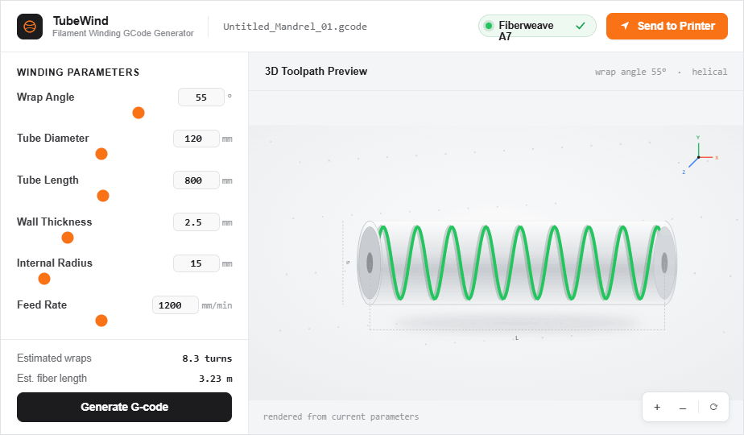

GCode Generator and Sender
2026
- Wrote a Python app that generates winder G-code for carbon fiber tubes from a few parameters.
- Supports variable cross-section tubes that standard winding tools cannot produce.
- Building a GUI and integrating Universal Gcode Sender into one app to run the winder end to end.
Links / info

Overview
This is the G-code generator I wrote for our carbon fiber filament winder at Bike Builders of Berkeley. The winder builds tubes by wrapping carbon tow around a rotating mandrel, and the motion of that wrap has to be computed precisely, with the right wind angle, coverage, and layer count for a given tube. I wrote this tool to generate that motion automatically: from a small set of design parameters, such as tube dimensions, wind angle, and number of layers, it produces the complete G-code the winder runs, so we can go from a tube specification to a machine-ready program in seconds instead of authoring paths by hand.
Purpose
The tool's most important capability is handling tubes that do not have a constant cross-section. A standard winding program assumes a fixed diameter, but many of our tubes, like the tapered top tube on our downhill frame (see the Downhill Mountain Bike project), change shape along their length. My generator computes the winding path for these variable-profile tubes, adjusting the machine's motion continuously as the cross-section changes, which is what makes those parts possible to manufacture. It gives the team a fast, repeatable way to turn a tube design into a wind, and it removes the manual, error-prone step of writing machine code for every new tube.
Development
I wrote the project entirely myself, in Python. It started as a parameter-driven script and has grown into an application with a graphical interface (currently under development) so that anyone on the team can set up a wind without touching code. The GUI exposes the tube parameters, lets you preview the result, and exports the G-code, which lowers the barrier to using the winder and keeps our tube manufacturing consistent from person to person.
What I am working on now
I am currently integrating the Universal Gcode Sender (UGS) source code into the application so that generating and sending G-code to the winder happen in the same place. The goal is a single, one-stop program for running our filament winder: define the tube, generate the winding path, and stream it straight to the machine, all from one interface. This turns what is currently a multi-tool workflow into one cohesive application built specifically around how our winder works.